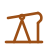
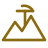
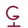

Los medios del sector productivo argentino
Cuatro portales de noticias y datos: energía, minería, campo y lechería. Se actualizan varias veces por día y cada dato lleva su fuente.

El Gran Energético
Noticias del petróleo, el gas y la minería de Argentina, con la producción de Vaca Muerta y los precios del crudo actualizados todos los días.

El Gran Minero
Noticias de la minería argentina actualizadas varias veces por día, con los precios de los minerales y el mapa oficial de proyectos de todas las provincias.

El Gran Ganadero
El diario del campo argentino: noticias del agro, precios de hacienda en Cañuelas, granos en Rosario y Chicago, dólar, remates, calculadora ganadera y foro.
La Cuenca Láctea
La Cuenca Láctea: noticias, precios, exportaciones y foro de la lechería argentina. Cobertura de Santa Fe, Córdoba, Buenos Aires y toda la cuenca lechera.